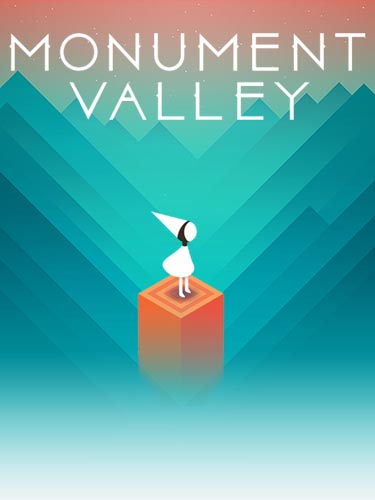

Los videojuegos de lógica, también conocidos como videojuegos de inteligencia o videojuegos de puzle, son un género de videojuegos que se caracterizan por exigir agilidad mental al jugador. Pueden involucrar problemas de lógica, matemáticas, estrategia, reconocimiento de patrones, completar palabras o hasta simple azar. El género puede ser difícil de describir, cada uno tiene su estilo único. Algunos videojuegos de lógica más comunes, como lo es Tetris, tienen como objetivo acomodar piezas que caen para organizarlas de la manera correcta. Otros pueden ser organizar objetos en un escenario establecido, como en Sokoban. También pueden ser alcanzar una meta eliminando enemigos o activando botones, como en Bomberman. Lo interesante de los videojuegos de lógica es que pueden mezclarse para formar nuevos juegos, como en Tetris 2 que mezcla elementos de Tetris con Dr. Mario, o tomar una idea y ampliarla, como Tetrisphere. Muchos videojuegos que no son clasificados como de lógica, contienen acertijos que hay que resolver para conseguir avanzar. Esto es habitual en juegos de aventura gráfica, y también en otros como The Legend of Zelda, Resident Evil y El Profesor Layton.
Existe una gran variedad dentro de los juegos este género; algunos se enfocan en la rapidez mental del jugador (juegos de lógica-acción), otros en la capacidad de razonamiento (juegos de física, o de acertijos), otros en la capacidad de observación (juegos de objetos ocultos), etc